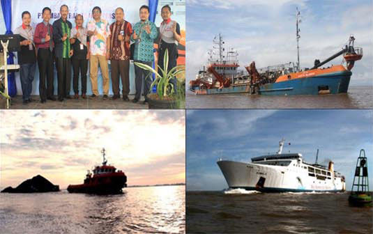

Pada hari Rabu (28/12/2016) telah dilangsungkan Rapat Umum Pemegang Saham (RUPS) untuk pengesahan Taksiran Realisasi (Taksasi) anggaran 2016 dan Rencana Kerja Anggaran Perusahaan (RKAP) 2017. Berlangsung dengan penuh keakraban direksi PT Ambapers (Ambang Barito Nusapersada) menyampaikan optimisme raih laba 24 milyar.
“Pada prinsipnya kinerja secara umum meningkat, bersamaan dengan membaiknya pasar batubara melewati alur ambang sungai Barito,” kata Khairil Anwar Direktur Utama PT Ambapers.
“Diperkirakan sampai akhir Desember 2016 jumlah tongkang batubara mencapai 9.763 unit, tongkang tambang lain 31 unit, dan tongkang hasil hutan sebanyak 115 unit. Total produksi yang dihasilkan kita proyeksikan sebanyak 90.281.510 Mton,” imbuh Nugroho Dwi Priyohadi Direktur Eksekutif PT Ambapers.
Dewan Komisaris yang hadir lengkap yakni Toto Heliyanto (Komut), HM Bayu Budjang, M Yani Helmi dan Takwim Masuku merespon positif terhadap optimisme yang disampaikan oleh Direksi.
“Kita lihat pendapatan usaha akan mencapai lebih dari 391 Milyar, dan laba sebelum pajak memang diperhitungkan mencapai lebih dari 24 milyar. Kelihatannya biaya usaha masih sangat besar namun ini disebabkan dalam pelaksanakan pengerukan alur menggunakan mitra strategis, yang terikat kontrak dengan system pembiayaan dengan presentase tertentu,” ungkap Toto Heliyanto.
“Pertumbuhan produksi 2,99% untuk RKAP 2017 merupakan angka moderat dari asumsi RAPBN 2017 sebesar 5,1%, karena meskipun nasional ditetapkan tumbuh lebih dari 5%, namun pasar batubara relative sulit diprediksi sehingga rencana pertumbuhan untuk RKAP 2017 tersebut dibuat secara realistis berdasarkan kondisi pasar,” kata Nugroho.
PT Ambapers memang dikenal sebagai perusahaan patungan dengan komposisi kepemilikan saham BUMD PT Bangun Banua (60%) dan PT Pelindo III (40%) dengan layanan jasa alur yang menjamin kedalaman draft 5 LWS, panjang alur 15 KM dan lebar alur 100 M di pintu muara sungai Barito Banjarmasin.
Rata-rata tongkang yang melewati alur tersebut lebih dari 800 unit setiap bulannya. Channel fee yang dipungut sebagai pendapatan perusahaan sampai saat ini hanya diberlakukan untuk tongkang bermuatan batu bara, hasil tambang lain dan hasil hutan. Dengan demikian kapal dengan muatan sembako, BBM baik subsidi maupun non subsidi, dan penumpang termasuk kapal ro-ro serta kapal petikemas masih menikmati fasilitas alur secara gratis sejak tahun 2009 berlaku efektifnya operasional PT Ambapers.
“Secara teoritis Ambapers memberikan banyak subsidi untuk pengguna alur non komoditas tongkang wajib bayar,” pungkas Khairil Anwar.
Setelah taksiran realisasi ditetapkan laba lebih dari 24 milyar maka ditetapkan RKAP untuk tahun untuk tahun 2017 akan mencapai lebih dari 25 milyar. ***(humas ambapers,29122016)***
Bertempat di kantor PT Ambang Barito Nusapersada pada hari Kamis 8 Desember 2016 ...
21 Desember 2016 08:41:45Bertempat di kantor PT Ambang Barito Nusapersada pada hari Kamis 8 Desember 2016 ...
21 Desember 2016 08:41:45Bertempat di kantor PT Ambang Barito Nusapersada pada hari Kamis 8 Desember 2016 ...
21 Desember 2016 08:41:45Bertempat di kantor PT Ambang Barito Nusapersada pada hari Kamis 8 Desember 2016 ...
21 Desember 2016 08:41:45Bertempat di kantor PT Ambang Barito Nusapersada pada hari Kamis 8 Desember 2016 ...
21 Desember 2016 08:41:45Bertempat di kantor PT Ambang Barito Nusapersada pada hari Kamis 8 Desember 2016 ...
21 Desember 2016 08:41:45